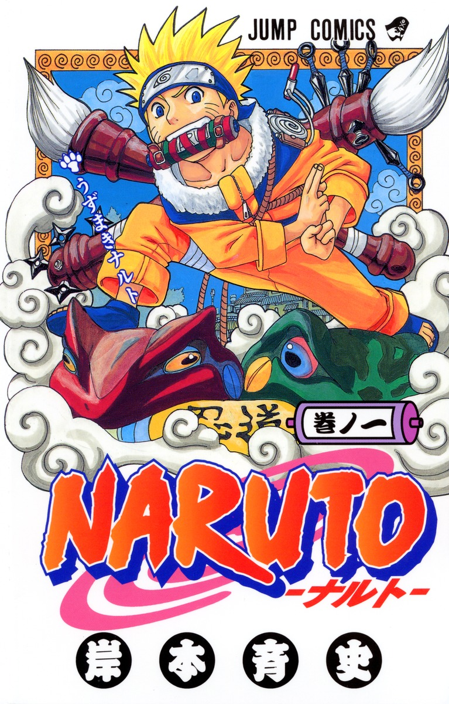

木ノ葉隠れの里に住む少年・うずまきナルトは、いたずら好きで落ちこぼれの忍者。周囲に認められず孤独な日々を送っていたが、「火影（里一番の忍者）」になるという夢を胸に、仲間と共にさまざまな任務や修行に挑んでいく。友情や努力を通じて、少しずつ成長していく姿が描かれる冒険と絆の物語。

人類は巨人という脅威から逃れるため、巨大な壁の中で暮らしていた。外の世界を知らずに生きる日々の中、少年エレンは「自由」を求めて壁の向こうを夢見る。仲間と共に過酷な現実に立ち向かいながら、彼の旅はやがて世界の真実へとつながっていくという壮大な物語。